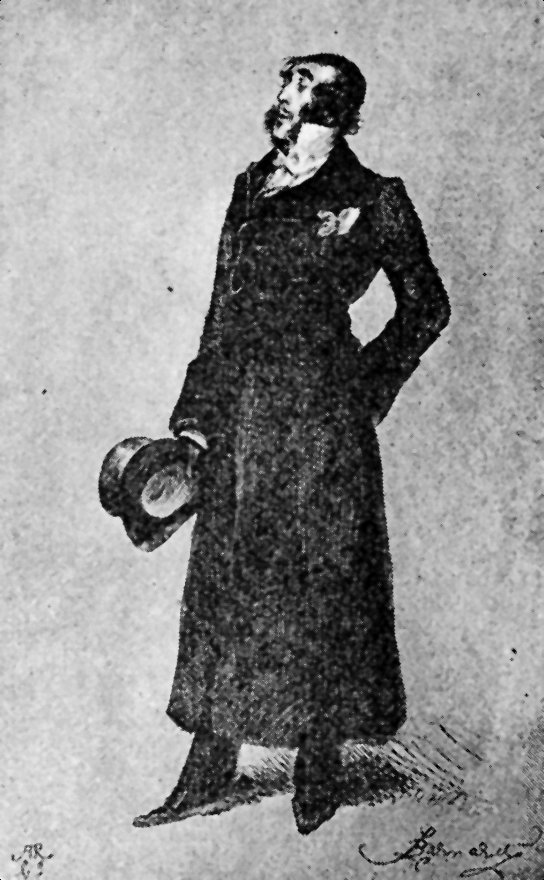

CHURCH AND STAGE.
A REVIEW OF HENRY IRVING,
BY THE REV. DR. JOSEPH PARKER.
WITH ILLUSTRATIONS FROM F. BARNARD AND J. BERNARD PARTRIDGE.
MR. IRVING AS "HAMLET." (From the Portrait by EDWIN
LONG.)
{kind=link}

MR. IRVING AS "DIGBY GRANT" IN "TWO ROSES."
{kind=link}
The innumerable reviews of Mr. Irving by literary and artistic experts have left room enough for an amateur estimate by a man who is accustomed to regard human life mainly from a religious standpoint. A complete review of the Stage by the Pulpit could hardly be the work of a single pen; for my own part, therefore, I can only make a very small contribution to such a review by indicating a few points which have occurred to me in the study of one particular actor. At once, however, the question arises, Is Mr. Irving a man who can be thus summarily characterised? In a dramatic sense, are there not many Mr. Irvings? When a man can act "The Two Roses" and "The Dead Heart" with equal effect, when he can at will be as vulgar as Robert Macaire, or as dignified as Cardinal Wolsey; when he can be either as young as Hamlet or as old as Lear, the inquiry as to his plurality becomes natural and pertinent. For my part, I rank Mr. Irving the comedian above Mr. Irving the tragedian, just as I rank Nature above Art: each may be highest in its own way, yet the one may have a charm which the other cannot boast. Mr. Irving's tragedy sometimes requires working up, but his comedy is spontaneous and immediate. The needful working up of tragedy is no fault of the actor. Tragedy should hardly ever begin at once. The murder may come too soon. Premature rage is followed by untimely laughter. Digby Grant begins at once, and can be his best self in the very first sentence, but Macbeth must move towards his passion by finely-graded ascents. In Mr. Irving's exquisite representation, Macbeth's anxieties and perturbations, his rapid alternations of courage and cowardice, make delicate but obvious record of themselves in deepening the grey of his hair, and ploughing more deeply the lines of his face. A comedy may be judged scene by scene, almost sentence by sentence, but a tragedy can be truly estimated only when viewed in final perspective.
{kind=link}
Judged by this test, I have no hesitation in regarding Mr. Irving's King Lear as the finest creation of his genius. This is an instance in which the actor creates the piece. Shakespeare is, as a poet and playwright, at his worst in "King Lear." Yet his accessories are wonderful in variety and suggestiveness. Only Shakespeare could have created the heath, and have so ordered the old King's passion, as to make his madness part of the very thunder and lightning. That was Shakespeare's magnificent conception, and Mr. Irving's rendering is worthy of its tempestuous grandeur. How to talk up to the storm, how to pierce the tumult with the cries of human distress, how to escape the ridiculous and the incongruous, how to be a King on the desolate heath, and to make the royalty gleam through the angry darkness, were the problems, and Mr. Irving solved them one and all, even with redundance of faculty and skill. At the end of the heath scene the man is more remembered than the storm. It has been objected that in the first scene Mr. Irving's Lear is too old and feeble. I venture to think otherwise. I further venture to think that the King's age and the King's imbecility have both been accurately appreciated. A man at eighty, a man athirst for flattery, a man who would pay a kingdom in exchange for adulation, must have outlived all that is best and strongest in human nature. He comes upon the stage as a wreck. His vanity has eaten up his sagacity, so that she, Goneril or Regan, who can flatter most, can lie most, and can play the devil best, shall fare most lavishly at his hands. Is it not well partly to excuse these excesses of self-valuation by such mitigations as can be found in the infirmity of old age? Even in an elderly man they would have been treated with contempt; they could only be endured in one whose eighty years had been doubled by the hardness of his life lot.
In "Henry VIII." Mr. Irving had little to do. In that play the labour and the glory fell upon another, to the infinite delight of the public. In "Lear," Mr. Irving has everything to do. From beginning to end there is only one character. Even the fascinating Cordelia is but a silver cloud on the far horizon. "The King is coming" is the cry of the play. His madness is more, as to display and effect, than the sense of all the others. The scene is stiff and cold until his wild hair is observed to approach the front, and then the whole spectacle is alight with feeling and purpose. The other actors are not to blame that, to a large extent, they are thrown into the shade; indeed, they are to be warmly congratulated upon their self-suppression and their passive sympathy. It is a hard task to play the part of two heartless and treacherous daughters, and a pitiful fate to have to represent the villainy of Edmund, yet all this was admirably done. It cannot be an easy thing to come forward to play the villain well, for the better the dramatic villain is played the more is the actor compelled to recognise in his execration the exact degree of his success. So admirably can Mr. Irving himself play the villain, that it is difficult to believe that any godparents ever, on his unconscious behalf, renounced the pomps and vanities of this wicked world.
In many minor parts—or along the subsidiary lines of great parts—Mr. Irving's subtlest power comes into effective play. Who, for example, can be more gentle or more graceful with a little child? Who could hug the "fool" more fondly than old King Lear? Then recall his wonderful recognitions of old friends. When, in "The Dead Heart," he is liberated from the Bastille, how old times slowly but surely dawn into consciousness, and how quickly the dawn hastens into the noontide of the tenderest fellowship and highest festival of joy. It is verily a resurrection. After eighteen years' entombment this political Lazarus comes forth to liberty, to leadership, to dominance.
In "Lear," there are two wonderful instances of recognition, the recognition of Gloster and of Cordelia. Gloster is blind and bandaged. Cordelia has been long out of sight—if not in actual days yet in depth of feeling—and the King himself is demented. Little by little things shape themselves in the memory and fancy of the King. There is something confusedly familiar in the voice of Gloster which, tone by tone, settles into recognition. In the case of Cordelia the father gradually subdues the King, and instinct takes the place of reason; then, in a fine strain, comes the identification:
| "Do not
laugh at me, For, as I am a man, I think this lady To be my child Cordelia." |
The utterance of these words by Mr. Irving is simply thrilling. The tones, the glances, the approach, the embrace, lift up the words into new light, keen and tender as the brightness of a summer morning. The words themselves are by no means striking, are, indeed, the merest commonplace, but, uttered with the natural pathos of a consummate actor, they carry the play to its most subduing climax. The humanity and the genius satisfy expectation in its most eager and jealous temper. Failure at that point would have ruined the play. Which was better, Lear or Cordelia, in that critical action? We must first settle, Which is better, the star of morning or the morning star?
{kind=link}
As I opened this brief review with a reference to the religious standpoint, it may be well now to ask how the Church is to regard the Stage as an educational institution? The Stage cannot be put down. It responds to an instinct which is ineradicable, and which need not be ignoble. The parables of the New Testament are the sublimest recognition of that instinct. The drama is older than the theatre. Much of the greatest preaching has been dramatic, by which I mean that it has touched human life through the medium of story and parable, coloured and toned by a living fancy. Sometimes, too truly, the dramatic in preaching has degenerated into impossible anecdotes, most of them originating in the Far West of America, yet even such anecdotes testify to the overpowering force of the dramatic instincts when limited to their most vulgar conditions. My submission is, that a properly-conducted stage might be the most powerful ally of the pulpit. I advance upon this submission, and contend that the function of the preacher is infinitely superior to the function of the actor. Whatever the preacher has to say that is distinctive he can trace to what he believes to be a Divine and authoritative origin. I hold the great preacher to be a spiritual medium. In his next evolution he will simply tell the people whatever may have been given him in the same hour to say. This does not mean that indolence will supersede industry. Through the indolent man God sends no messages. The true prophet will always be preparing himself. By learning, by meditation, by self-discipline, the true prophet will prepare his heart for the incoming of the Eternal Spirit, and the glory of Heaven will be as a fire on the altar of the honest heart. Art preachers we have had in too great abundance. Mechanical talkers have brought upon the pulpit the disrepute of dulness. The age now waits for the messenger in whose loving heart there is the glow and the radiance of divinest sympathy. The great actor himself would be the first to admit that the preacher cannot trace his own public secondariness to the poverty of his themes. Where the preacher falls behind the actor, it is because the preacher does not realise the majesty and the tenderness, the vehemence and the urgency, of his own message.